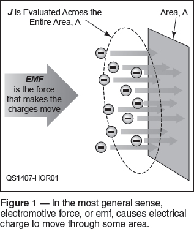
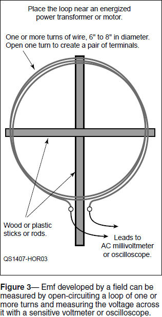

Experiment #138 — E versus V
One of the first bits of technical lore every ham, indeed, every electronic hobbyist learns is the venerable Ohm’s Law. This simple formula explains the relationship between current through a material with a known resistance, and the voltage across the material. Students dutifully memorize it in all its forms: I = E / R, E = I × R, and R = E / I but often ask the question, “Where do E and I come from?” They understand the use of R to represent resistance. The use of E for voltage and I for current is a little confusing. Why not V and C or V and A? That’s a very good question and its answer goes back to the beginning of the electric era.
Instructors correctly respond that “E stands for electromotive force or emf.” Isn’t that just a fancy way of saying “voltage?” Not really. Let’s go back to the early 1800s, when experimenters like Faraday and Henry and Ørsted were discovering electric and magnetic fields, the relationships between them, and their ability to influence the movement of a mysterious substance known as electric charge. (Some of these early discoveries are related in Hands-On Radio Experiments #117 and #118.1)
Before the Electron
The early experimenters were completely in the dark about what was moving around in their wires and reacting to the presence or motion of electric or magnetic fields. Even Faraday’s concept of a field that explained how energy could be distributed in space was radical and new. So all they knew was electric charge and that there was a force that could make the charge move — the electromotive force.
Remember that no one at the time had the slightest idea what electric charge was. Dalton’s description of the atomic role in chemistry had only been introduced between 1802 and 1805, and Lord Kelvin’s discovery and description of the electron as an individual particle didn’t come until 1897. Bohr’s model of the hydrogen atom with electrons arranged in shells around a nucleus and which could leave an atom and move about, was not developed until 1913. Even today, we don’t really understand what electric charge actually is, why it exists, or even what the electron consists of. That those early experimenters were able to ascertain fundamental laws which still hold true today is nothing short of remarkable!
From E to V
Yes, yes, but what about E and V? If you browse through an introductory electrical engineering textbook that introduces students to the world of electric fields and circuits, you will likely see that the book begins with these same basic relationships between fields and current. Students learn a general description of what makes electrons move in response to electric fields and magnetic fields and the initial equations usually use E or e to represent the electromotive force. (The symbol ε is also used.)
In this general environment, it is appropriate for the equations to use electromotive force. The resulting electron motion is analyzed through a volume or across a surface that has some conductivity (σ) which describes the ease with which electrons move through it. Figure 1 shows a diagram of charge moving through a cross-section area, A. Resistivity (ρ) is the reciprocal of conductivity, so that ρ = 1 / σ. Resistivity is measured as ohm-meters or ohm-m.

So far, we haven’t seen a hint of a circuit and all the equations are using E and the general parameter current density (J) which is the amount of current per unit of area. Boring! When do we get to the good stuff? Patience is eventually rewarded as the conducting material is formed into a thin loop — a circuit — and subjected to electric and magnetic fields. Now the electrons are moving around in this circuit and J can be replaced by current, I, the flow of all electric charge through the entire cross-sectional area of this thin conducting volume.2 Similarly, it now makes sense to talk about the loop’s resistance, represented by R, since the current is now flowing in this highly constrained path. R accounts for all of the material’s resistance and for a cylindrical wire as in Figure 2, R = ρ l / A, where l is the wire’s length, A is its cross-sectional area, and ρ is the material’s resistivity. (We are only referring to dc, so the skin effect of ac current does not apply.)
We still have no batteries or power supplies, just an externally generated field that is a source of emf, represented by E and so the relationship between the three parameters becomes the familiar I = E / R. Here E represents the emf developed all the way around the loop by the external field. If you did the experiments of Experiment #118, you observed this current as the magnet moved near the coil of wire which made a long loop.

Figure 3 shows how to see this emf by constructing your own loop and placing it near a power transformer or motor which is the source of a changing magnetic field. (For a field to generate emf in a loop that makes a current flow, the field must be changing or the circuit must be moving through the field.)

To measure the emf the loop is cut as in Figure 3, creating a pair of terminals. Current flow stops, of course, but an electric potential now exists between those terminals.3 By measuring it, we can tell how much energy (in joules) an amount of electric charge (in coulombs) will gain from the effects of the field on the loop. Electric potential is thus measured in joules/coulomb and the value of 1 joule/coulomb defined as 1 volt in honor of Alexander Volta, inventor of the battery. Electric potential was given the simpler name of voltage as well. The symbol for volts is the familiar V and voltage is represented in an equation by V or v.
Can V be substituted for E without risk of confusion? If the discussion is of ordinary electronic circuits, the answer is almost always yes. It is safe to say that substituting I = V / R for I = E / R will not get you into trouble around ham radio equipment! You should use E, however, when the discussion is about fields — for motors, generators, antennas, transformers, etc. Another place you’ll see emf is the term kickback emf that refers to the reverse voltages generated by inductances when current through them is suddenly interrupted or turned off, causing the magnetic field created by current through the inductance. Similarly, a motor develops a back emf that opposes the applied voltage, limited current through the motor to only that required to drive the load and account for internal losses.
Don’t confuse units of measurement, such as volts (V), amperes (A), and ohms (Ω), with their corresponding physical phenomena, such as electric potential (also V), current, (I), or resistance (R). For example, Ohm’s Law is never written as A = V / Ω.
We have answered almost all of the original question but what about the mysterious I? Returning back to the early days, experimenters had learned to discriminate between a quantity of charge and the flow of charge (current). The French experimenter Ampere (for whom the unit of current was later named) gave flow of charge the name “Intensité de Courant” (Intensity of Current) and assigned it the symbol I or i in equations. (This is one reason why electrical engineers use j instead of the mathematician’s i to represent the imaginary square root of negative one in their equations.)
The ampere is a flow of one coulomb (C) per second. How many electrons make up 1 C? 6.24×1018 electrons! Basic Radio from 1942 gives us an idea of how many that is: “If 3 million people were to count for 8 hours per day at the rate of 200 per minute, they would have to count from the time of the Trojan Wars in 500 BC down to the present” in order to count the number of electrons passing by at a rate of 1 ampere.
Another source of frequent confusion is the overuse of the symbol C, which is used at various points to represent coulombs, capacitance (measured in farads with the symbol F), battery capacity and battery charge or discharge rates, not to mention the speed of light, c — see?
In closing, I would like to acknowledge the comments of Dana Brown, AD5VC, and Sam Neal, N5AF, on the “ham_instructor” e-mail reflector.4 Sharing expertise is one of the hallmarks of Amateur Radio and it is particularly important for instructors so that our newest licensees have a common (and correct) understanding of radio’s physical environment.
Notes
1All previous Hands-On Radio experiments are available to ARRL members at www.arrl.org/hands-on-radio.
2As an example — if a current, I, of 1 ampere is flowing in a 16 AWG wire 0.051 inches in diameter, the wire has a cross-sectional area of pd2/4 = 0.00204 in2 and the corresponding current density, J = 1 / 0.00204 = 490 A / in2. If the wire is made smaller, I will not change but J will increase.
3The electric potential across the open-circuited terminals of a source of emf is also known as the open-circuit voltage.